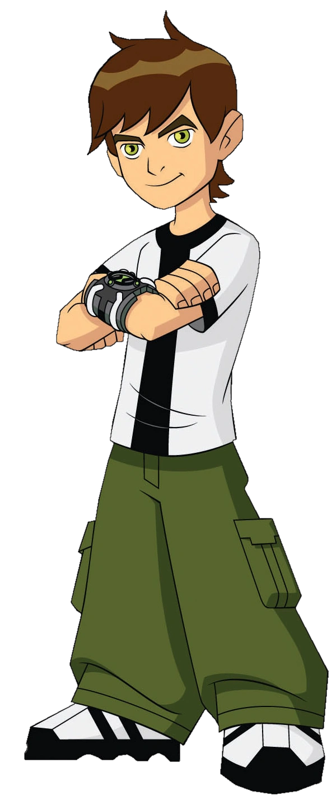

Benjamin Kirby Tennyson
Species - Human
HomeWorld - Earth
Age:
4 (Don't Drink the Water; temporarily)
5 ½ (Omniverse Flashbacks)
10 (Original Series)
11 (Omniverse Flashbacks and Arrested Development; temporarily)
15 (Alien Force and Omniverse Flashbacks)
16 (Ultimate Alien and Omniverse)
Status - Alive
Affiliations:
Ben's Team,
Plumbers,
Madison Elementary School (formerly),
Team Tennyson (disbanded),
Galactic Enforcers (temporarily),
Alien Force (disbanded),
Alienated! (ended),
Plumbers' Academy (formerly),
Looma Red Wind (fiancée; formerly),
Chadzmuth (lawyer; formerly).
Occupations:
Hero,
High School Student,
Soccer Player,
Voice of Reason (inside Alien X),
Plumber (unofficially; deputized agent),
Elementary School Student (formerly),
Middle School Student (formerly).
Aliases:
Ben 10,
Ben Prime,
Hero of the Highbreed Wars,
Conqueror of Vilgax,
Hero to All Worlds,
Wearer of the Omnitrix,
Savior of the Universe,
Dr. Tennyson.
Abilities:
Street Fighting Proficiency
Savate Proficiency
Karate Proficiency
Marquess of Queensbury Boxing Proficiency
Enhanced Jumping
Enhanced Acrobatics
Enhanced Reflexes
Enhanced Eidetic Memory
Gunmanship
Swordsmanship
Piloting Proficiency
Baseball Proficiency
Soccer Proficiency
Guitar Shredding
Ambidexterity
Equipments:
Omnitrix
Second Hoverboard
Cell Phone
Plumber Badge
Plumber Suit
Original Omnitrix (destroyed)
X321 Hoverboard (destroyed)
Galactic Enforcer Badge (formerly)
Hazmat Suit (formerly)
Spacesuit (temporarily)
ID Mask (temporarily)
Holo-Viewer
Kevin's Car (temporarily)
DNA Repair Gun (formerly)
Max's Motorcycle (temporarily)
Mark 10 (formerly)
Ultimatrix (destroyed)
Ascalon (formerly)
Tenn-Speed (destroyed)
Time Cycle (destroyed)
In Sumo Slammer Smackdown:
Sword
Relatives:
Carl Tennyson (father)
Sandra Tennyson (mother)
Max Tennyson (paternal grandfather)
Verdona (paternal grandmother)
Frank Tennyson (paternal uncle)
Natalie Tennyson (paternal aunt-in-law)
Ken Tennyson (paternal cousin)
Gwen Tennyson (paternal cousin)
Gordon Tennyson (paternal granduncle)
Betty Jean Tennyson (paternal grandaunt-in-law)
Joel Tennyson (paternal first cousin once removed)
Camille Mann (paternal first cousin-in-law once removed)
Vera Tennyson (paternal grandaunt)
Clyde Fife (paternal second cousin)
Ben (paternal great-great-grandfather)
Jedediah (paternal great-granduncle)
Sunny (paternal cousin)
14 Necrofriggians (children as Big Chill)
Lucy Mann (paternal second cousin-in-law once removed)
Albedo (corrupted genetic copy)
Nanomech (partial genetic copy)
Manny (uncle)
Love Interests:
Julie Yamamoto (ex-girlfriend)
Patty Berkenfeld
Kai Green (girlfriend)
Elena Valadis
Eunice
Emily
Ester (ex-girlfriend)
Attea
Drew Saturday
Voice Actor:
Tara Strong (4, 5, 10, and 11 years old)
Yuri Lowenthal (15 and 16 years old)
Voice:
Christopher Stalley (Power of the Omnitrix)
Ryan Kelley (Alien Swarm)
First Appearance:
And Then There Were 10